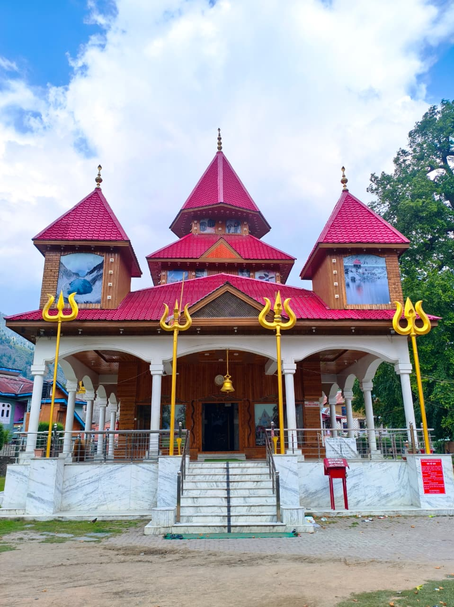

Amid the lush green hills of Bhaderwah, often celebrated as 'Naagon Ki Bhoomi' (The Land of Serpents), stands the centuries-old Vasuki Nag Temple, a revered shrine that reflects the region's rich spiritual heritage, folklore and architectural legacy. Dedicated to Lord Vasuki, the king of serpents in Hindu tradition, the temple continues to draw devotees and visitors who seek blessings while admiring one of the most remarkable heritage structures of the Chenab Valley.
The temple is believed to have been constructed during the reign of Maharaja Dhuri Pal and occupies a special place in the cultural identity of Bhaderwah. At its heart are the sacred idols of Lord Vasuki Nag and Raja Jamute Vahan, which have long fascinated devotees for their unique craftsmanship and enduring presence. Local traditions and oral history surrounding the temple have been passed down through generations, making it not only a place of worship but also a living repository of the region's collective memory.

The temple's distinctive red-roofed exterior, a landmark in Bhaderwah town. | Photo: Sahil Pandita
Every year, the temple becomes the starting point of the revered Kailash Kund Yatra, with pilgrims offering prayers here before undertaking the challenging journey to the sacred high-altitude lake, believed to be the abode of Lord Vasuki. This annual pilgrimage strengthens the temple's role as a spiritual centre connecting faith, history and nature.
Captured through the lens, the temple stands quietly against the backdrop of Bhaderwah's scenic landscape, where traditional wooden architecture blends seamlessly with the surrounding mountains. The image reflects more than just a historic monument — it preserves a timeless symbol of devotion, resilience and cultural continuity that has survived the passage of centuries. In an age of rapid modernisation, the Vasuki Nag Temple continues to remind visitors that the true strength of heritage lies not only in its stones, but also in the beliefs, traditions and stories that keep it alive.